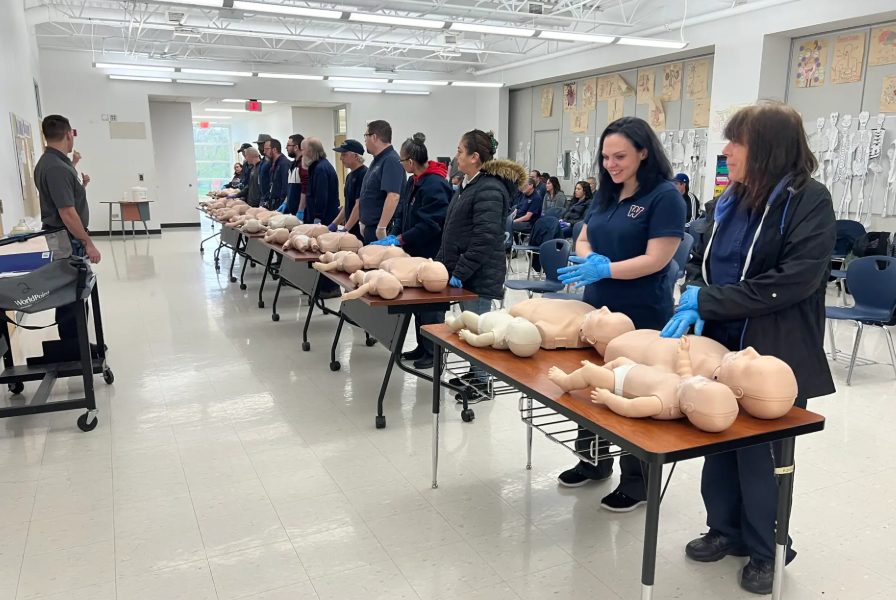

Levels 1, 2 and 3
Mental Health First Aid
Training that helps teams recognise mental health concerns early, offer practical support and signpost people to appropriate help.
 Course overview
Course overview
Practical mental health support for everyday workplace confidence.
This module helps staff respond with calm, appropriate support while understanding boundaries, escalation routes and the importance of early intervention.
Early recognitionSupportive conversationsSignpostingWorkplace wellbeing